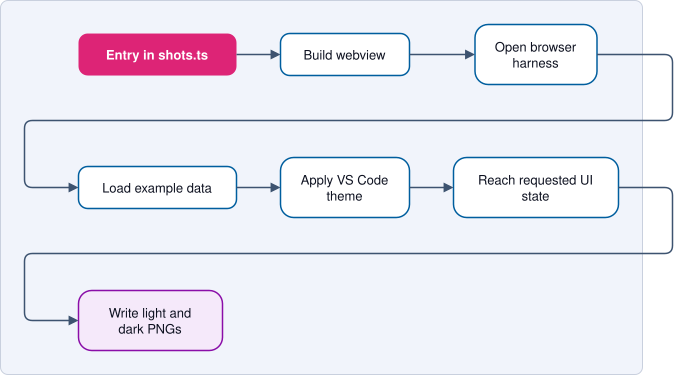

Documentation Screenshots¶
IPCraft generates documentation screenshots from the compiled webviews. This keeps images aligned with the current interface and makes captures repeatable.
Generate all screenshots¶
npm run docs:screenshots
The command builds the webview bundles, opens each documented state in
Playwright, and writes light and dark PNG files to docs/images/.
Markdown pages embed only the light image because it also works well when the documentation is printed:

Do not edit generated PNG files by hand.
How capture works¶

The capture list is scripts/docs-screenshots/shots.ts. One entry describes
the webview, input data, viewport, optional clipped element, and any interaction
needed before capture.
export interface Shot {
id: string;
harness: 'memorymap' | 'ipcore' | 'dataInspector' | 'systemDiagram';
source: string;
viewport?: { width: number; height: number };
clip?: string;
scale?: 'css' | 'device';
setup?: (page: Page) => Promise<void>;
}
The output name is docs/images/<id>-<theme>.png.
Walkthrough frames¶
The landing page (docs/index.html) plays its walkthroughs as sequences of
stills: anim-hierarchy-*, anim-unconnected-*, anim-isolate-*,
anim-export-* and anim-inspect-*. Each frame is a shot whose setup
repeats the steps of the frames before it, then draws a pointer where the user
acts (showPointer). They use scale: 'css', one image pixel per CSS pixel, to
keep the frames small. To regenerate only these, run
npm run docs:screenshots -- -g anim-.
The export walkthrough also shows render-example-light.svg and
render-example-dark.svg, written by ipcraft render from the same design:
node dist/cli.js render src/test/fixtures/system-design/zynq_dma_system.tcl \
--out docs/images/render-example-light.svg --no-workspace
node dist/cli.js render src/test/fixtures/system-design/zynq_dma_system.tcl \
--out docs/images/render-example-dark.svg --theme dark --no-workspace
Add a screenshot¶
- Choose a real example that clearly shows the feature.
- Add one entry to
scripts/docs-screenshots/shots.ts. - Use
setuponly when the capture needs a click, selection, or host message. - Run
npm run docs:screenshots. - Inspect both theme variants.
- Add the light PNG to the relevant Markdown page.
Prefer one screenshot that explains a workflow over several images of similar
states. Use a draw.io diagram instead when the page explains data flow,
ownership, or internal architecture. Save it as an editable .drawio.svg in
docs/images/diagrams/, in the light bahonavi palette of the diagrams already
there, and embed it as an image.
Supported webviews¶
| Harness | Content |
|---|---|
memorymap |
Memory Map editor |
ipcore |
IP Core editor |
dataInspector |
Data Inspector |
systemDiagram |
System diagram (design read by the real offline reader) |
The harnesses live in src/test/browser/. They load the real compiled bundles
without starting VS Code.
Native VS Code views¶
The browser harness cannot capture views rendered by VS Code itself:
- the IPCraft Build tree in the Explorer;
- the template preview opened as a text editor;
- native menus, notifications, and status-bar items.
Capture these manually in a clean VS Code window when a screenshot is essential. Use the light theme, crop to the relevant area, and avoid personal paths or unrelated extensions.
The Scaffold Pack Preview is a standalone webview. It could be automated with a dedicated harness, but it is not currently part of this pipeline.
Themes¶
A normal browser does not provide VS Code color variables. The harness injects the matching variables before the webview starts so controls read the correct colors when they are created.
Theme files are under scripts/docs-screenshots/theme/. To refresh one from a
running VS Code webview, open Developer Tools and copy its --vscode-*
variables:
copy(
':root{' +
Array.from(document.documentElement.style)
.filter((name) => name.startsWith('--vscode-'))
.map(
(name) =>
`${name}:${document.documentElement.style.getPropertyValue(name)}`,
)
.join(';') +
'}',
);
Update the relevant CSS file and regenerate the screenshots.
Important capture rules¶
- Wait for real content, not only the webview root element.
- Fail when a required selector or state is missing.
- Keep carets, hover effects, and transitions out of the result unless they are the subject of the image.
- Use stable, representative project data.
- Never include credentials, user paths, or private project names.
- Keep Markdown image descriptions short and specific.
Verification¶
After generating images:
- Confirm every expected light and dark file was updated.
- Confirm no image shows a loading state.
- Compare controls and text with the matching VS Code theme.
- Build the documentation:
python3 -m pip install -r docs/requirements.txt
mkdocs build --strict
- Run
npm run test:browserto confirm the shared browser harnesses still work.
Screenshot generation is intentionally not a required CI step. Run it when a UI change makes an existing image inaccurate or when a new visual workflow is documented.
System viewer performance script¶
A sibling developer tool measures how the system viewer responds on a large
design. npm run perf:system-viewer builds the webview in production mode and
runs scripts/perf/system-viewer.spec.ts (config config/playwright.perf.ts,
never run by npm run test:browser or CI) on the harness above. It loads
vivado_dsp_soc_64ch.tcl and vivado_dsp_soc_8ch.tcl and prints, for each
action (search keystrokes, Enter, Escape, selecting a block, wheel zoom with
Simplify zoomed out on and off, drag pan, Fit), the script, style and layout
time from Chrome's Performance.getMetrics and the number and longest of the
long tasks (over 50 ms). A JSON copy goes to test-results/perf/. Times vary
by machine: compare runs on the same machine, before and after a change.